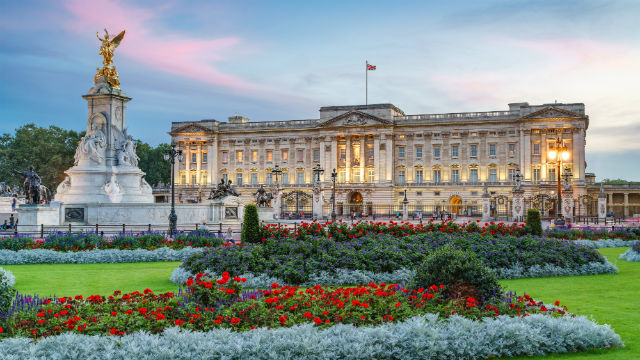

London
London is a multi-cultural capital of the world. It is one of the greatest cities in the world because of how diverse it is.
London has a great collection of people and their values from all over the world. Throughout the course of the year, London as a city,
as a community celebrate a lot of values and events that have been celebrated for many generations in a culture; all because they have
the freedom to freely express themselves. Below, are a few examples of what London does to welcome people of the world that come to visit
this beautiful, touristic capital.
Culture
Ever since the 19th century, London's culture has constantly evolved due to the influx of residents. London has continued to willingly accept
people of different ways of life into their contry; considering them as 'one of their own', which isn't something that you can find everywhere
in the world. THis is what makes London's culture very stimulating.
Nature
There are quite a few unique things about London that really allow you to appreciate nature in such a beautiful capital. From
London Zoo to Hyde Park, there's just so much to see that shows the beauty of nature and how Londoners really appreciate what
they have access to when the choose London as a tourist destination.
Landmarks
London is also known for all of it's infamous landmarks all over the city. This goes from Big Ben to Wembley Stadium. Majority of the
famous landmarks in London are under protection by the Uk's government allowing them to have an influence on London's culture as well as London's
indentity linked to the direct lineage of the UK's royal ancestry.
